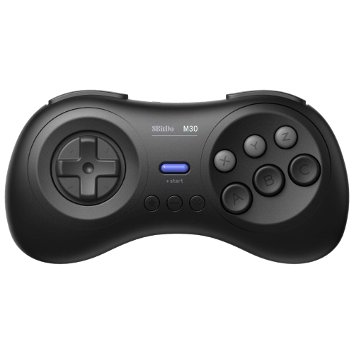

СОВМЕСТИМЫЕ УСТРОЙСТВА
MEGAPI CASE

8BITDO M30 GAMEPAD
И многие другие геймпады
ДЕМОНСТРАЦИЯ
ОСОБЕННОСТИ
- Поддерживает игры Mega Drive / Genesis (.bin, .smd, .gen и .md), Sega CD / Mega CD (.chd, .img, .iso, один .bin + .cue, несколько .bin + .cue) , Mega Drive 32X / Sega 32X (.bin, .32x), игры Master System (.sms) и Game Gear (.gg).
- Поддержка заархивированных ромов в 7z/zip.
- Работает на Retroarch, а также на ядрах Genesis Plus GX и PicoDrive (см. Лицензию).
- Быстрая загрузка (~ 15 секунд).
- Управление интерфейсои при помощи геймпада.
- Сoздавайте список любимых игр.
- Поддержка контроллеров Bluetooth.
- Удаление игр в интерфейсе.
- Загрузка/удаление сохранений (ограничено четырьмя слотами).
- Совместим с корпусом MEGAPi и его сценариями сброса и выключения.
- Легкое добавление игр с USB накопителя.
- Легкое обновление.
- Если обложка для игры не найдена, вместо нее будет отображаться стоковый логотип.
- Резервное копирование и восстановление системы.
- Выход в командную строку и перезагрузка из интерфейса.
СКРИНШОТЫ


ОТЛИЧИЯ ОТ BLAST16
- Теперь поддерживаются только стандартные обложки 230x320.
- Функции некоторых кнопок были изменены.
- Анимированный фон был удален. Вместо него теперь есть три статичных фона, которые меняются в настройках.
- Таким же образом меняются верхние и нижние текстуры.
- Изменена музыка и звуки. Полностью переписан стиль отрисовки всех шрифтов.
- Были добавлены некоторые настройки для Retroarch и изменены горячие клавиши (Мануал).
ВСТРОЕННЫЕ ЯЗЫКИ
- Английский
- Испанский
- Французкий
- Немецкий
- Итальянский
- Португальский (Бразилия)
- Русский
СКАЧАТЬ
Если вы хотите поддержать разработку мода, или просто отблагодарить автора, нажмите на кнопку:
Пожертвовать
Мод был обновлен.
Исправлены мелкие баги и исправлена графика.
Стабильная версия Blast16
СКАЧАТЬ
Blast 16 UI MOD
СКАЧАТЬ
ИНСТРУКЦИЯ
Данный мод полностью совместим со всеми сценариями Blast16, поэтому он реализован в виде USB обновления.
УСТАНОВКА МОДА
Скачайте и установите Blast16 с этого сайта на вашу SD карту.
Произведите первый запуск Blast16.
На этом этапе вам нужно убедиться, что в настройках установлен английский язык. Это очень важно.Отформатируйте USB флешку SD Formatter'ом, удалив все из поля "volume label".
Скачайте файл с UI модом и скопируйте его в корень флешки.
Подключите флешку к Raspberry Pi и включите ее. Обновление установится автоматически, как только вы увидете логотип SEGA, флешку можно извлечь.
Наслаждайтесь!
МАНУАЛ ДЛЯ BLAST16
ЧИТАТЬ
БЛАГОДАРНОСТИ
Tripware и Luis Morcillo за предоставление инструментов и консультацию.